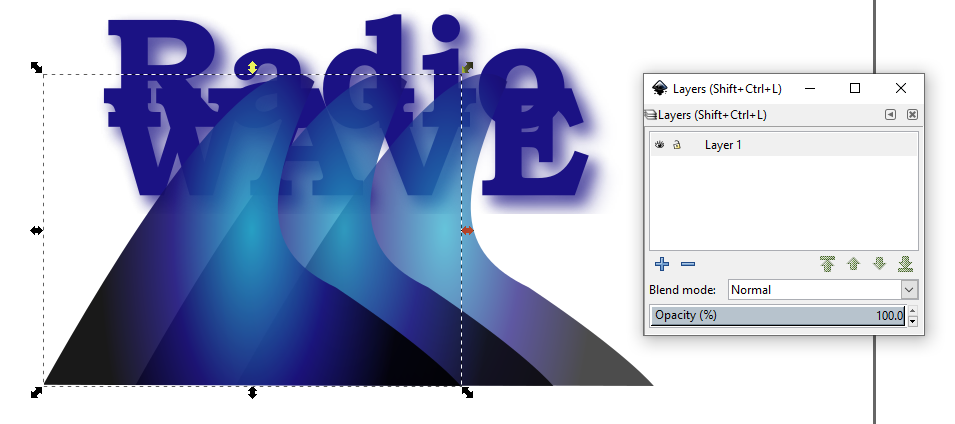
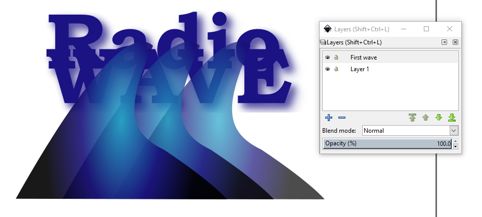
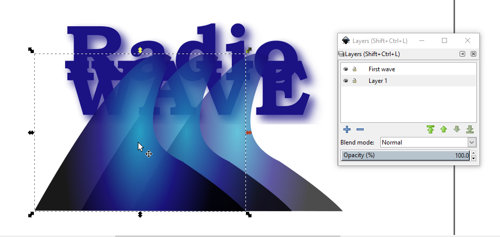
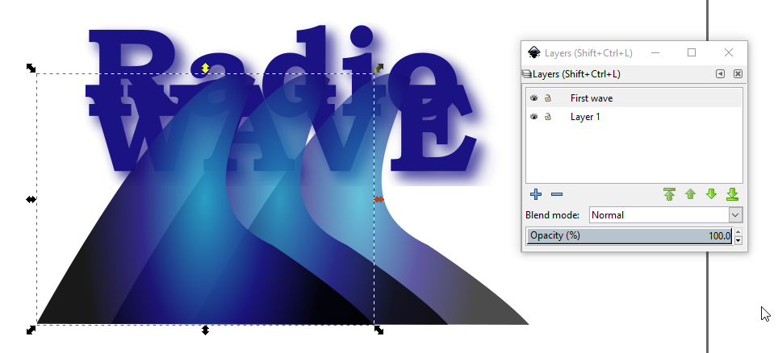
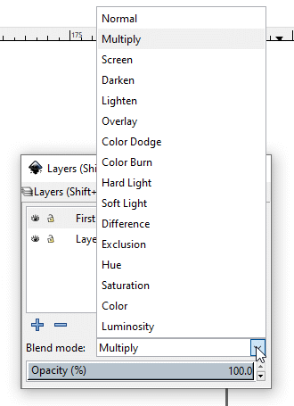
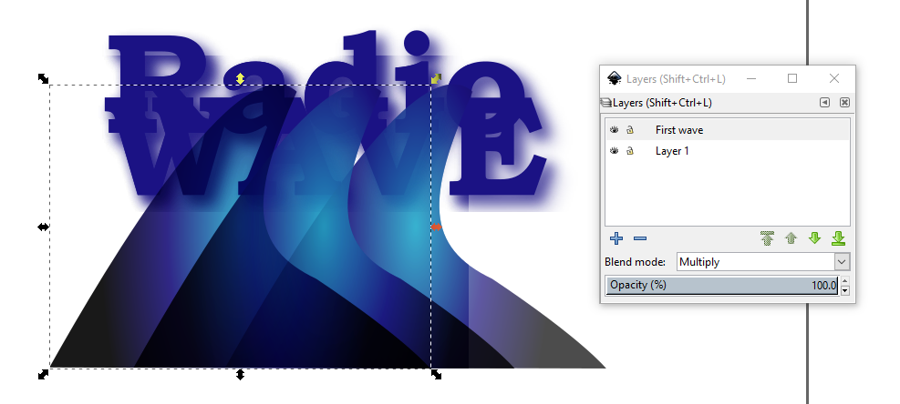
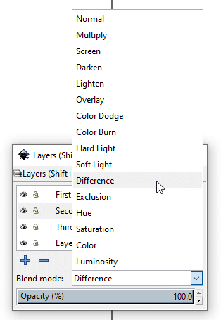
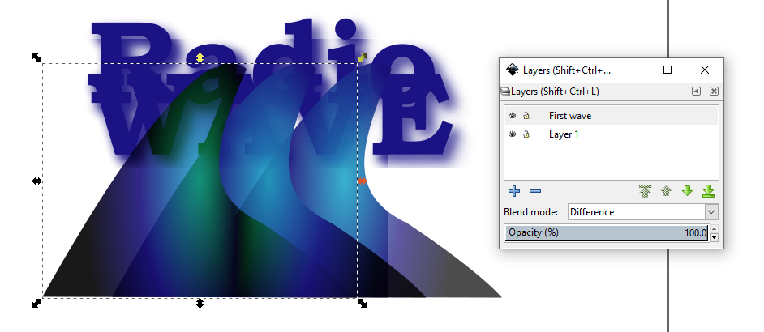
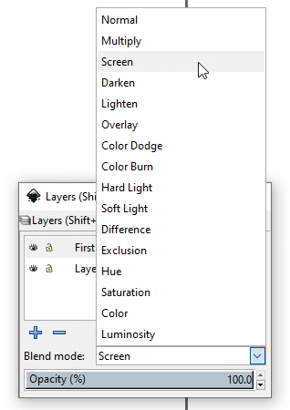
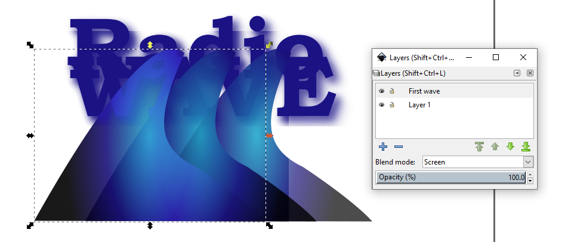

Inkscape’s Transparency feature gives you the
opportunity of adding a new dimension to your artwork that can exceed your
expectations and expand your imagination. You can create special effects using
the transparency and color blending features, such as knocking out underlying
colors or creating graduated transparencies and blends.
In this tutorial, you’ll learn how to do the following:
Use the Transparency feature.
Change the opacity of objects.
Use color blending modes.
Use group options for transparency.
Getting Started
In this lesson, you’ll add transparency to artwork in several ways.
You can vary the degree of transparency of an object’s fill or stroke (or
both), a group of objects, or a layer from 100% opacity (completely solid) to
0% opacity (completely transparent). When you decrease an object’s
opacity, the underlying artwork becomes visible through that object as if you
were working with stained glass.
Using transparency features, you can also create special effects, such as
knocking out underlying colors or creating graduated transparencies or blends.
Transparency can be applied to multiple objects, groups, and even to entire
layers. In this lesson you will focus on the transparency and color blending
features and their capabilities. Learn how to apply transparency to layers in
Lesson 7, "Working with Layers."
If you like, use the Zoom tool () to reduce the view of the finished artwork,
adjust the window size, and leave it on your screen as you work. (Use the
mouse wheel with and without pressing the <Shift> key to move the
artwork where you want it in the window.) If you don’t want to leave
the image open, choose File > Close.
To begin working, you’ll open an existing file set up for
experimenting with Inkscape’s transparency and color blending
features.
The artwork in this file contains four ungrouped pieces of artwork: a text
object and three individual wave images. You will apply different degrees of
transparency and color blending to each wave.
Choose File > Save As, name the file
Radio.svg, store it in a convenient location, and click on the
Save button.
Applying Transparencies to Objects
Using the Select tool (), select the first wave on the left.
First wave selected.
Choose Object > Fill and Stroke > Fill
tab, and type 90 in the right end of the Opacity (%) sliding bar.
First wave set to 90 percent opacity.
You can just see text through the first wave.
Select the middle wave with the Select tool () and,
with the Fill and Stroke palette still open, move the Opacity (%)
sliding bar with the adjustment arrow () to 80.0. If you experience difficulty because of the
arrow’s sensitivity to movement, you can type in 80
<Enter>. The up and down arrows at the end of the bar also allow for
fine numerical adjustment.
Second wave set to 80 percent opacity.
Text is relatively more visible through the second wave.
Select the third wave with the Select tool () and,
with the Fill and Stroke palette still open, move the Opacity (%)
sliding bar with the adjustment arrow () to 70.0 or by typing in 70 <Enter>.
Waves at 90, 80, and 70 percent opacity,
respectively.
With each wave, the underlying text becomes more visible.
Choose File > Save. Keep the file open if you plan
to continue on to the next exercise.
Basic color blending and blending modes
Color blending works with layers to produce its visual effects. When an
object needs to have its own special see-through effect, it is best to have
that object in its own layer. Several objects that use the same blending mode
can be in the same layer for the sake of efficiency.
You will create a layer and move the leftmost wave to that layer to see how
blending modes work.
Creating a layer to house the leftmost wave
Click on the leftmost wave with the Select tool ().
Click on the Layers icon () in the Command menu bar.

Leftmost wave is selected and the Layers palette is
active.
Click on the Add layer plus sign () to create a new layer.
When the Add Layer dialog box appears, type First wave in the
Layer name text box, keep the Position as
Above current.
Click on the Add button.

The layer for the leftmost wave is created.
Click on the leftmost wave. Note that the Layer 1 bar is highlighted
in the Layers palette.

Clicking the leftmost wave still in Layer 1.
With the leftmost wave still selected, press the
<Shift>-<PgUp> key combination to move the wave to the First
wave layer. Note that the top layer bar (First wave) is now
highlighted. Also, note that the Layer palette now shows a Blend mode
option, currently showing Normal.

Leftmost wave has been moved to the top layer.
Exploring color blend modes
Multiply
Click on the arrow at the right end of the Blend mode options bar
and select Multiply from the dropdown option list.

Blend modes dropdown list.

Result of applying the Multiply color blend mode to the
leftmost wave.
Multiply multiplies the underlying color with the overlapping
object’s color. The result is always a darker color. Multiplying any
color with black produces black. Multiplying any color with white leaves the
color unchanged. The effect is similar to drawing with multiple magic markers.
This blending mode is used often for drop shadows.
Difference
With the leftmost wave still selected (if it isn’t, then
reselect it) select Difference from the dropdown option list.

Select the Difference blending mode.

Result of applying the Difference color blend mode to the
leftmost wave.
Difference creates the effect of seeing underlying objects as a
color film negative. Using it subtracts either the overlaying color from the
underlying color or the underlying color from the overlaying color, depending
on which one has the greater brightness value. Blending with white inverts
the underlying color values; blending with black produces no change.
Screen
With the leftmost wave still selected (if it isn’t, then
reselect it) select Screen from the dropdown option list.

Select the Screen blending mode.

Result of applying the Screen color blend mode to the
leftmost wave.
Screen multiplies the inverse of the overlying and underlying
colors. The resulting color is always a lighter color. Screening with black
leaves the color unchanged, and screening with white produces white. The
effect is similar to projecting multiple slide images on top of each
other.
File > Save.
Experiment with the other blending modes available in the dropdown list.
If you want to undo a color blend, click on the object and then choose
Normal from the Blend mode dropdown list in the Layers palette.
Forthcoming color blending functionality in Inkscape.
In the interest of putting this tutorial on the Web sooner rather than
later, I chose not to include sections on blend isolation, blend knockouts,
and working with opacity masks. These three topics are good graphic design
techniques for further exploration in development and implementation to add
to Inkscape’s already impressive armada of features and functions.
Review Questions
What is the difference between transparency and opacity?
What is a blending mode and how is it applied?
Can transparency and color blending be combined?
Review Answers
Transparency and opacity are opposites of each other. Transparency
has to do with how much you can see through an object (how transparent it is);
opacity has to do with how much you can’t see through an object, or how
opaque it is.
Blending modes allow you to vary the way that colors in objects
interact or blend with the underlying objects. Modes can be selected from the
Blend mode dropdown menu in the Layers palette.
Yes, transparency and color blending can be combined to produce a
broad range of design effects, such as images produced with stained glass,
tracing paper, lighting effects, and more.

 ) to reduce the view of the finished artwork,
adjust the window size, and leave it on your screen as you work. (Use the
mouse wheel with and without pressing the <Shift> key to move the
artwork where you want it in the window.) If you don’t want to leave
the image open, choose File > Close.
) to reduce the view of the finished artwork,
adjust the window size, and leave it on your screen as you work. (Use the
mouse wheel with and without pressing the <Shift> key to move the
artwork where you want it in the window.) If you don’t want to leave
the image open, choose File > Close.
{kind=link}
 ), select the first wave on the left.
), select the first wave on the left.

 ) to 80.0. If you experience difficulty because of the
arrow’s sensitivity to movement, you can type in 80
<Enter>. The up and down arrows at the end of the bar also allow for
fine numerical adjustment.
) to 80.0. If you experience difficulty because of the
arrow’s sensitivity to movement, you can type in 80
<Enter>. The up and down arrows at the end of the bar also allow for
fine numerical adjustment.

 ) in the Command menu bar.
) in the Command menu bar. ) to create a new layer.
) to create a new layer.